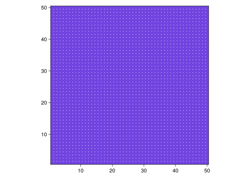
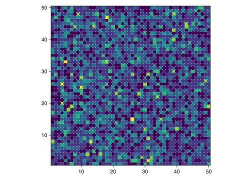
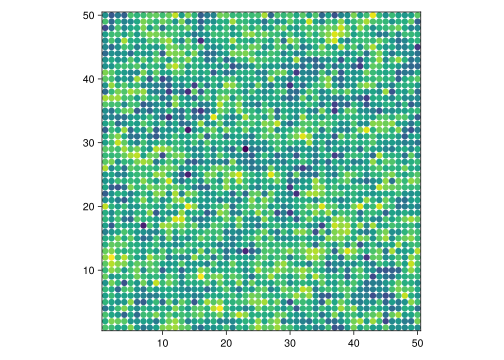
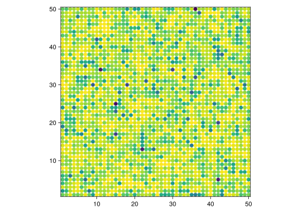
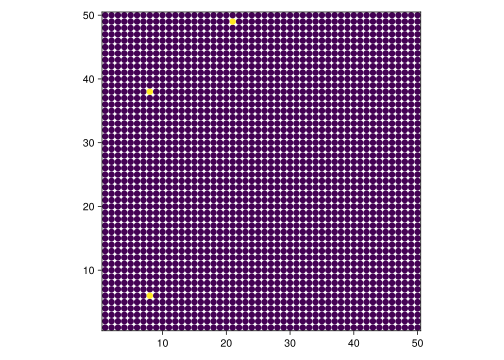

plot(1:100, (1:100) .^ 2, seriestype = :scatter, color = :blue)Structured populations
lecture
Update 21 May 2024
Fixed definition of structured population. The correct definition is: a population is structured if \(P(Y \mid X) \neq P(Y)\).
Plan
- So far, we have had agents interacting randomly
- We did this by:
- initializing a population,
pop, using an array comprehension - using
rand(pop)to sample random agents - using our own function
interact!to make two agents interact
- initializing a population,
- Today: using Agents.jl to work with structured populations
Positional vs. keyword arguments
- First, though, a technical remark about function arguments
- We’ve seen function calls like this:
- Here,
1:100and(1:100) .^ 2are positional argumentsseriestype = :scatterandcolor = :blueare keyword arguments
- You can swap the order of the latter but not of the former
- To create keyword arguments in your own function, you separate the list of keyword and positional arguments with a semicolon (
;):
function my_fun(pos1, pos2; keyword1, keyword2)
...
end- If you don’t want any positional arguments, you have to write the following!
function my_fun(; keyword1, keyword2)
...
end- Keyword (but not positional) arguments can have default values:
function my_fun(; firstname = "John", lastname)
println(firstname * " " * lastname)
end
my_fun(firstname = "Jane", lastname = "Doe")
my_fun(lastname = "Doe")Jane Doe
John DoeStructured populations
- I define a population to be structured whenever speakers do not interact fully at random
- Formally:
- let \(P(X)\) = probability of sampling agent \(X\) for an interaction
- let \(P(Y \mid X)\) = (conditional) probability of sampling agent \(Y\), given that \(X\) was already sampled
- then population is structured if \(P(Y \mid X) \neq P(Y)\)
- Example: \(P(\text{D. Trump} \mid \text{Henri}) = 0\) even though \(P(\text{D. Trump}) > 0\)
Implementation
- It would be possible for us to write code for structured populations from scratch
- However, this would be more of an exercise in programming than in ABMs…
- We’re better off, here, using code written by other people
- Enter the Agents.jl package, an ecosystem/framework for ABMs in Julia
- You should already have Agents installed. If not, now’s the time to:
using Pkg
Pkg.add("Agents")Agents.jl basic steps
- Decide on model space (e.g. social network)
- Define agent type(s) (using special
@agentkeyword) - Define rules that evolve the model
- Initialize your model with
AgentBasedModel - Evolve, visualize and collect data
- This may seem intimidating at first, but is really quite simple!
- Let’s walk through an example: variational learners in space
Grid space
- For this, we will reuse (with some modifications) our code for variational learners
- And assume that individual learners/agents occupy the nodes of a grid, also known as a two-dimensional regular lattice:
- Point: interactions only occur along links in this grid
Grid space: implementation
- To implement this in Julia with Agents.jl:
dims = (50, 50)
space = GridSpaceSingle(dims)(50, 50)is a data structure known as a tupleGridSpaceSinglecomes from Agents.jl and defines a grid space in which each node can carry at most one agent (hence,Single)
Tuples and arrays
Tuples are similar to arrays. However, there are important differences. The most important of them is that arrays are mutable (the values of their elements can be changed after creation), while tuples are never mutable. Compare:
arr = [10,20]
tup = (10,20)
arr[1] = 30 # arr is now [30,20]
tup[1] = 30 # throws an errorThe developers of Agents.jl have decided that the argument of GridSpaceSingle has to be a tuple (this decision makes sense in this case—as an immutable type, a tuple is more efficient than an array of similar size).
If you are running into errors trying to initialize a GridSpaceSingle, the problem is probably that you are trying to pass it the wrong type of argument. Compare:
GridSpaceSingle([50, 50]) # trying to pass array; error
GridSpaceSingle(50, 50) # trying to pass two separate numbers; error
GridSpaceSingle((50, 50)) # passing a tuple; worksAgent redefinition
- To make use of the machinery provided by Agents.jl, we replace:
mutable struct VariationalLearner
p::Float64
gamma::Float64
P1::Float64
P2::Float64
end- with this:
@agent struct VariationalLearner(GridAgent{2})
p::Float64
gamma::Float64
P1::Float64
P2::Float64
end@agentis a special “macro” (more on these later) that introduces all agents in Agents.jlGridAgent{2}instructs Agents.jl that this agent is to be used in a 2-dimensional grid space
Stepping rule
- We next need a function that evolves i.e. steps the model
- This is a function that takes a single agent and the model as arguments
- We can make use of the
interact!function we have already written:
function VL_step!(agent, model)
interlocutor = random_nearby_agent(agent, model)
interact!(interlocutor, agent)
endModel initialization
- We now have all the ingredients we need to initialize the ABM:
model = StandardABM(VariationalLearner, space;
agent_step! = VL_step!)StandardABM with 0 agents of type VariationalLearner
agents container: Dict
space: GridSpaceSingle with size (50, 50), metric=chebyshev, periodic=true
scheduler: fastestIn the above function call, you cannot write agent_step!=VL_step! (i.e. without spaces around the = sign). This is because, if you do so, Julia parses this as agent_step != VL_step!, which is not what we want.
In other words, when using keyword arguments with exclamation points in their names, make it a habit to separate the equals sign with spaces.
- This creates a sort of an “empty” container (it has no agents yet). To add agents, we call:
add_agent_single!(model; p = 0.1, gamma = 0.01,
P1 = 0.4, P2 = 0.1)VariationalLearner(1, (4, 27), 0.1, 0.01, 0.4, 0.1)- Note: the values of the agent’s internal fields (
p,gammaetc.) are specified as keyword arguments!
- We have a space of 50 x 50 = 2,500 nodes
- Let’s add 2,499 more agents:
for i in 1:2499
add_agent_single!(model; p = 0.1, gamma = 0.01,
P1 = 0.4, P2 = 0.1)
end- Check number of agents:
nagents(model)2500Stepping the model
- Stepping the model is now easy:
step!(model)StandardABM with 2500 agents of type VariationalLearner
agents container: Dict
space: GridSpaceSingle with size (50, 50), metric=chebyshev, periodic=true
scheduler: fastest- Or, for a desired number of steps:
step!(model, 10)StandardABM with 2500 agents of type VariationalLearner
agents container: Dict
space: GridSpaceSingle with size (50, 50), metric=chebyshev, periodic=true
scheduler: fastest
Important
Stepping in Agents.jl is controlled by a so-called scheduler. You can decide which scheduler to use when initializing your model; for now, we will stick to the default scheduler.
This is important to know: when the default scheduler steps a model, every agent gets updated. In the case of our model, this means that every agent undergoes exactly one interaction as the “listening” party, i.e. every agent gets to learn from exactly one interaction during one time step.
Plotting the population
- With Agents.jl, we also have access to a number of functions that can be used for purposes of visualization
abmplot(model)plotsmodelin its current state. It has two return values:- the first one is the plot itself
- the second one contains metadata which we usually don’t need to care about
- To actually see the plot, you have to call the first return value explicitly:
fig, meta = abmplot(model)
fig┌ Warning: Found `resolution` in the theme when creating a `Scene`. The `resolution` keyword for `Scene`s and `Figure`s has been deprecated. Use `Figure(; size = ...` or `Scene(; size = ...)` instead, which better reflects that this is a unitless size and not a pixel resolution. The key could also come from `set_theme!` calls or related theming functions.
└ @ Makie ~/.julia/packages/Makie/iRM0c/src/scenes.jl:220
- So all we get is a purple square… what gives?
- The problem is that we haven’t yet instructed
abmplothow we want our model to be visualized - We could in principle be interested in plotting various kinds of things
- For our model here, it makes sense to plot the value of
p, i.e. each learner’s internal “grammatical state” - This is done with a function that maps an agent to its
p
- In this case, the function is as simple as:
function getp(a)
return a.p
endgetp (generic function with 1 method)
Tip
Julia also allows one-liner function definitions. These are often useful when defining very simple functions, like getp. The equivalent one-liner definition here is:
getp(a) = a.pgetp (generic function with 1 method)- We now pass our
getpfunction as the value of theagent_colorkeyword argument toabmplot:
fig, meta = abmplot(model; agent_color = getp)
fig┌ Warning: Found `resolution` in the theme when creating a `Scene`. The `resolution` keyword for `Scene`s and `Figure`s has been deprecated. Use `Figure(; size = ...` or `Scene(; size = ...)` instead, which better reflects that this is a unitless size and not a pixel resolution. The key could also come from `set_theme!` calls or related theming functions.
└ @ Makie ~/.julia/packages/Makie/iRM0c/src/scenes.jl:220
- We can see how the population changes as we evolve the model further (the new
askeyword argument specifies the size of the dots that represent the agents):
step!(model, 1000)
fig2, meta = abmplot(model; agent_color = getp, as = 12)
fig2┌ Warning: Found `resolution` in the theme when creating a `Scene`. The `resolution` keyword for `Scene`s and `Figure`s has been deprecated. Use `Figure(; size = ...` or `Scene(; size = ...)` instead, which better reflects that this is a unitless size and not a pixel resolution. The key could also come from `set_theme!` calls or related theming functions.
└ @ Makie ~/.julia/packages/Makie/iRM0c/src/scenes.jl:220
┌ Warning: Keywords `as, am, ac` has been deprecated in favor of
│ `agent_size, agent_marker, agent_color`
└ @ AgentsVisualizations ~/.julia/packages/Agents/8JW8b/ext/AgentsVisualizations/src/abmplot.jl:70
- And further:
step!(model, 1000)
fig3, meta = abmplot(model; agent_color = getp, as = 12)
fig3┌ Warning: Found `resolution` in the theme when creating a `Scene`. The `resolution` keyword for `Scene`s and `Figure`s has been deprecated. Use `Figure(; size = ...` or `Scene(; size = ...)` instead, which better reflects that this is a unitless size and not a pixel resolution. The key could also come from `set_theme!` calls or related theming functions.
└ @ Makie ~/.julia/packages/Makie/iRM0c/src/scenes.jl:220
- Making an animation/video allows us to visualize the evolution dynamically
- This is achieved with the
abmvideofunction
abmvideo("vid.mp4", model; agent_color = getp, as = 12,
frames = 100, framerate = 10)A more interesting example
- Above, we initialized the population so that everybody had
p = 0.1in the beginning - What about the following: at time \(t=0\),
- three people have
p = 1(uses \(G_1\) all the time), - every other person has
p = 0(uses \(G_2\) all the time)?
- three people have
- Will we see \(G_1\) spread across the population?
- Let’s try!
- We first reinitialize the model:
space2 = GridSpaceSingle((50, 50))
model2 = StandardABM(VariationalLearner, space2;
agent_step! = VL_step!)
for i in 1:3
add_agent_single!(model2; p = 1.0, gamma = 0.1,
P1 = 0.4, P2 = 0.1)
end
for i in 4:2500
add_agent_single!(model2; p = 0.0, gamma = 0.1,
P1 = 0.4, P2 = 0.1)
end
Important
Here it is important that we create a new space (I’ve called it space2). Otherwise Agents.jl would try to add agents to our old space, which is already full!
- Visualize initial state of population:
fig, meta = abmplot(model2; agent_color = getp, as = 12)
fig┌ Warning: Found `resolution` in the theme when creating a `Scene`. The `resolution` keyword for `Scene`s and `Figure`s has been deprecated. Use `Figure(; size = ...` or `Scene(; size = ...)` instead, which better reflects that this is a unitless size and not a pixel resolution. The key could also come from `set_theme!` calls or related theming functions.
└ @ Makie ~/.julia/packages/Makie/iRM0c/src/scenes.jl:220
- Animate for 1,000 iterations (every agent gets to learn 1,000 times):
abmvideo("interesting.mp4", model2; agent_color = getp,
as = 12, frames = 1000, framerate = 20)Next time
- Social networks, and how to implement them in Agents.jl
- Wrapping up some technical topics: modules, abstract types and inheritance